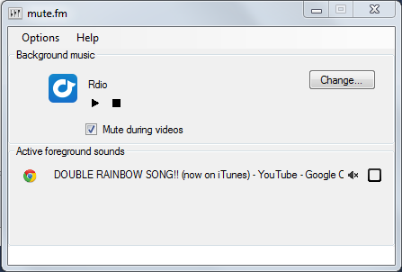

Step
1 of 9: Welcome to mute.fm
You are running mute.fm, a desktop program that mutes your music when you watch a video...automatically.
Please follow this quick wizard to:
- understand a bit about how mute.fm works
- observe mute.fm in action
- configure it to work with your music
(If you're wondering about the classical music that might have started, it becomes relevant a little later. :) )
Step
2 of 9: How does mute.fm work?
1. mute.fm constantly monitors the volume for each program (as you would see in the Windows Sound Mixer.)

2. When a program (often a video) makes a sound, mute.fm mutes your music. For supported players (see
mute.fm website) it pauses it.
3. When the video is no longer making a sound (after a wait of several seconds), mute.fm restores your music.
Step
3 of 9: What are mute.fm's limitations?
- You have to tell mute.fm what your music is up front.
- If your music is a webpage, you need to run it through a separate browser (mute.fm+ provides one and is recommended since it also makes it possible to pause).
- You sometimes need to wait a few seconds before your music resumes since mute.fm cannot differentiate between a video finishing, being paused, or being silent for a long time.
- mute.fm requires Windows 7 or Windows 8 and does not work with Windows 8-style applications.
Step
4 of 9: Observing mute.fm in action - 1 of 2
If this is your first time running this wizard, you should be hearing classical music from YouTube right now. If not,
- Verify that you have an Internet connection.
- Check that the volume for the hardware and for your system is not zero or muted.
- Make sure you aren't playing music or hearing sounds via any other programs. (These would show up in mute.fm under 'Active foreground sounds'.)
Step
5 of 9: Observing mute.fm in action - 2 of 2
Once you hear the music, play a video to observe it fade out. For your convenience, click
here to open a YouTube video.
You should hear the music fade out before your video started and fade back in after the video ends or is paused. The mute.fm status bar lets you know what is going on at any time.
Step
6 of 9: Listening to your own music - 1 of 3
Go to the mute.fm window.

It was opened automatically when you first installed; you can also find it by clicking on the

icon in the system tray. Decide what music you want to set up and if it comes from a program or a website.
Step
7 of 9: Listening to your own music - 2 of 3
If your music comes from a program:
- Run the program if it isn't already running and get it to play music.
- Click 'Change...' in the mute.fm window. It should show up under 'Recent Sounds'.
- Click 'Set as Background.' to make it your background music.
Step
8 of 9: Listening to your own music - 3 of 3
If your music comes from a website:
- Click 'Change...' in the main mute.fm window.
- Click 'Add'.
- Entering the URL, configure commands, and click OK.
- In the sound info editor, click 'Set as Background'.
- You may need to log into the site or navigate to a subpage. From the main mute.fm window, click on the website icon to do so.
Remember to always play this music through mute.fm instead of via your browser.
Step
9 of 9: Further information
- Music with commands can be controlled from mute.fm.
- Sometimes you need to manually click 'play' when music finishes.
- Click 'ignore for automute' (
 ) to listen to music while playing games. You can also set this within the sound info editor.
) to listen to music while playing games. You can also set this within the sound info editor.
- To save bandwidth, if your music is muted for 30 minutes, it will be stopped (and later it may resume at the beginning.)
You can run this wizard again at Help->Getting Started in the mute.fm window.